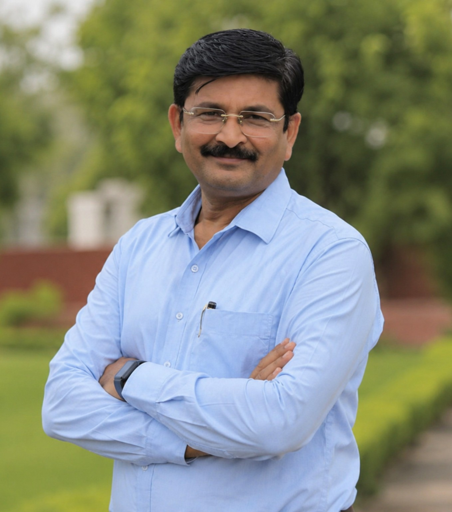

સમર્પણ • નેતૃત્વ • નિઃસ્વાર્થ સેવાની સફર
પ્રોફાઇલ જુઓ ↓ View રાજકીય સફર
ડીસા, બનાસકાંઠા, ગુજરાત – ૩૮૫૫૩૫
ડીસા, બનાસકાંઠા, ગુજરાત – ૩૮૫૫૩૫
મેડિકલ ક્ષેત્ર – પેરામેડિકલ
વર્ષ ૨૦૦૫થી ભારતીય જનતા પાર્ટી સાથે સક્રિય રીતે જોડાઈ, સંગઠનના વિવિધ સ્તરે મહત્વપૂર્ણ જવાબદારીઓનું સફળતાપૂર્વક નિર્વહન કરી સંગઠનને વધુ મજબૂત બનાવવા સતત કાર્યરત રહ્યા છે.
તોલાની ઇન્સ્ટિટયૂટ ઓફ ફાર્મસી કોલેજ, આદિપુર
સાર્વજનિક ફાર્મસી કોલેજ, મહેસાણા
વર્ષ ૨૦૦૫થી – ચેરમેન, ડૉ. બાબાસાહેબ આંબેડકર બચત અને ધિરાણ મંડળી લિ. ડીસા.
ચૂંટણી પ્રચારમાં વિશેષ જવાબદારીઓ
ગ્રેટર કૈલાશ વિધાનસભા સીટ
સીતાપુર વિધાનસભા સીટ
વિધાનસભા સંયોજક, માણસા વિધાનસભા
મલાડ વેસ્ટ વિધાનસભા સીટ
સમર્પણનો સંકલ્પ: રાજકારણ માત્ર હોદ્દા કે પદ સુધી સીમિત નથી, પરંતુ સંગઠન પ્રત્યે આજીવન સમર્પણ, કાર્યકર્તાઓ સાથેનો મજબૂત આત્મીય સંબંધ, સમાજ પ્રત્યેની જવાબદારી અને રાષ્ટ્રહિત માટે અવિરત કાર્ય કરવાની ભાવના એ જ રાજકીય તથા સામાજિક સફરનો મજબૂત આધાર છે.